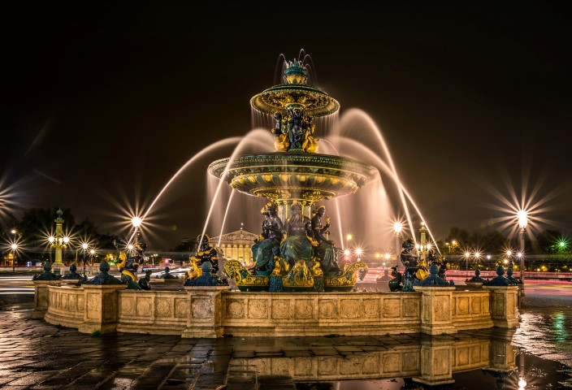
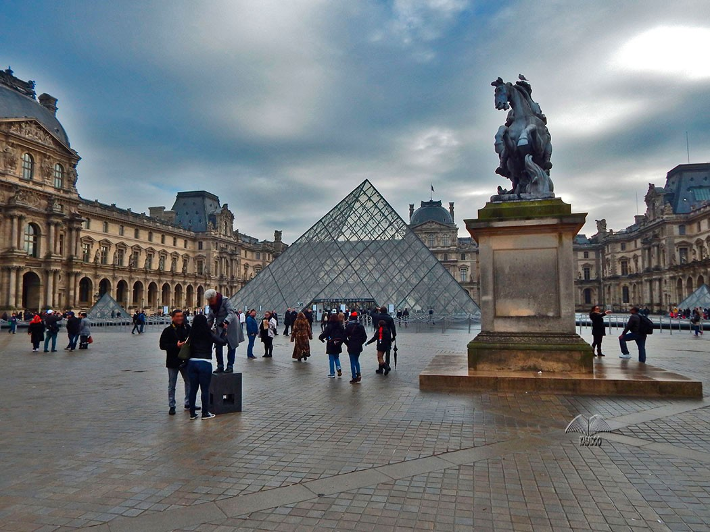
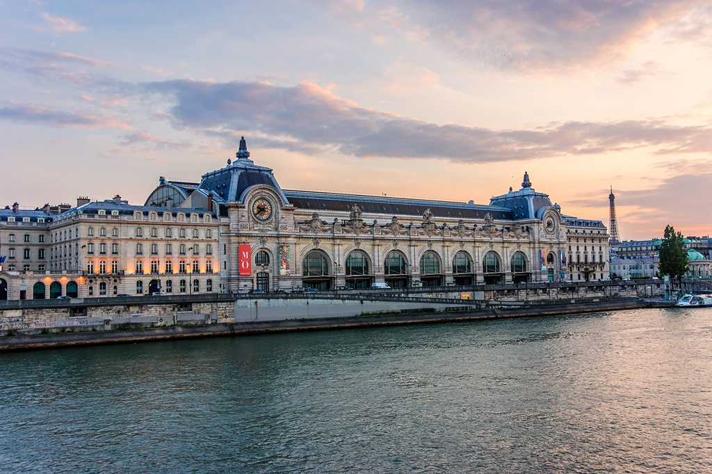
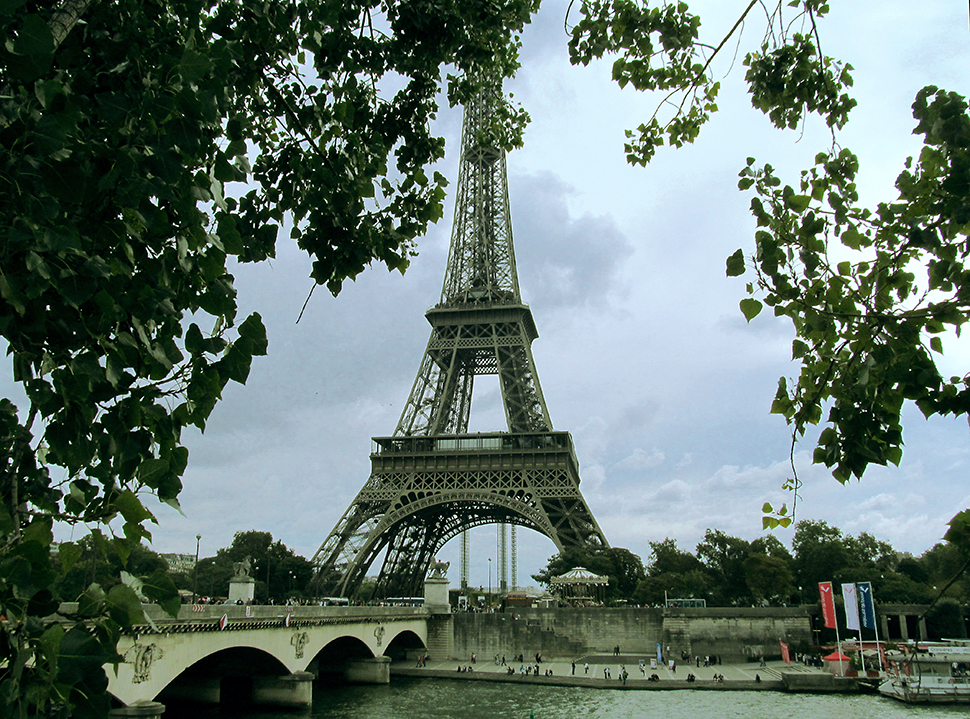

Pariz, grad ljubavi, grad svetlosti, umetnosti i kulture, sa svojim šarmantnim ulicama, slavnim palatama, divnim parkovima i čuvenom kuhinjom i vinima, zaista jeste jedna savršena romantična destinacija.
 Pariz je glavni grad Francuske i najveći grad u zemlji. Smešten je na reci Seni na severu Francuske i najrazvijeniji je poslovni i kulturni centar Francuske već vekovima. Pariz je podeljen na 20 okruga (arrondissements) koji su raspoređeni u spiralu kretanja kazaljke na satu, počevši od centra grada. Svaki okrug je dom velikom broju istorijskih objekata, lokaliteta i divnih mesta kao što su divno uređeni parkovi, savršeno restaurirane istorijske palate ili raznovrstan izbor restorana i mesta za kupovinu.
 Pariz je jedna od najposećenijih turističkih destinacija koju poseti preko 50 miliona turista svake godine, i sigurno da nema turističke agencije koja ne nudi putovanje i aranžman na ovu atraktivnu destinaciju. Najveći broj turista posete Pariz u prolećnim i letnjim mesecima pa se spremite na gužve na svakom koraku ako u ovom periodu putujete u Pariz, naročito na najposećenijim turističkim atrakcijama kao što su Ajfelov toranj, Luvr i Notre Dame de Paris. U ovom periodu Pariz je najaktivniji i kada se radi o brojnim koncertima, festivalima, sajmovima, ..


Grad svetlosti,romantike i lepote.
Pariz na Seni, na severu Francuske.
Avionom,autobusom,vozom ili biciklom.
Pariz vas čeka.
ATELIER DES LUMIÈRES-Pogledajte izložbu godine.Pariz 2019.
Osetite život Versaja uz zvuke Menueta.
{kind=link}
{kind=link}
{kind=link}
{kind=link}